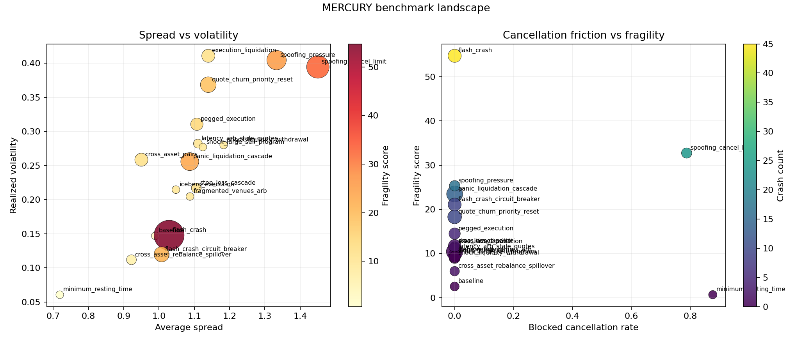
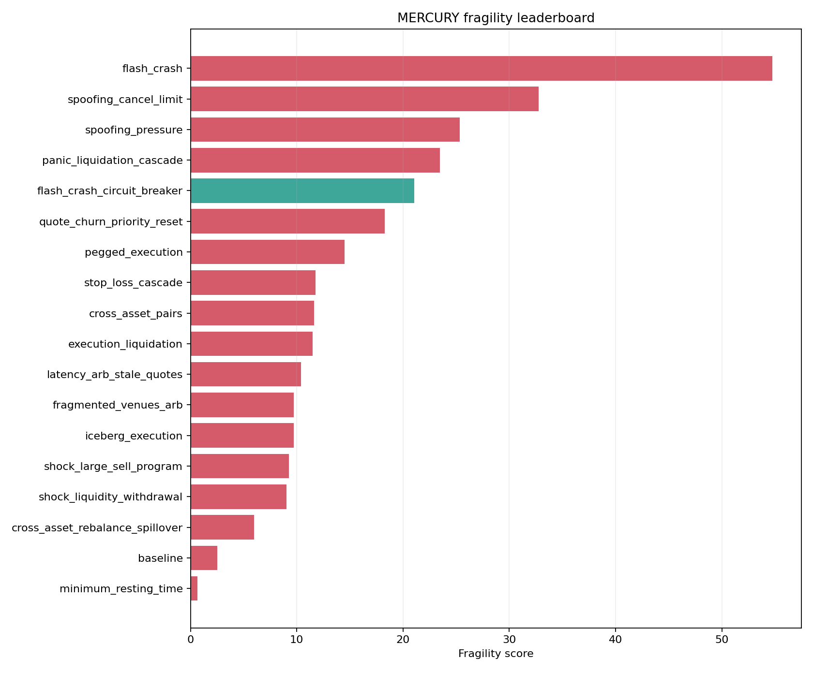
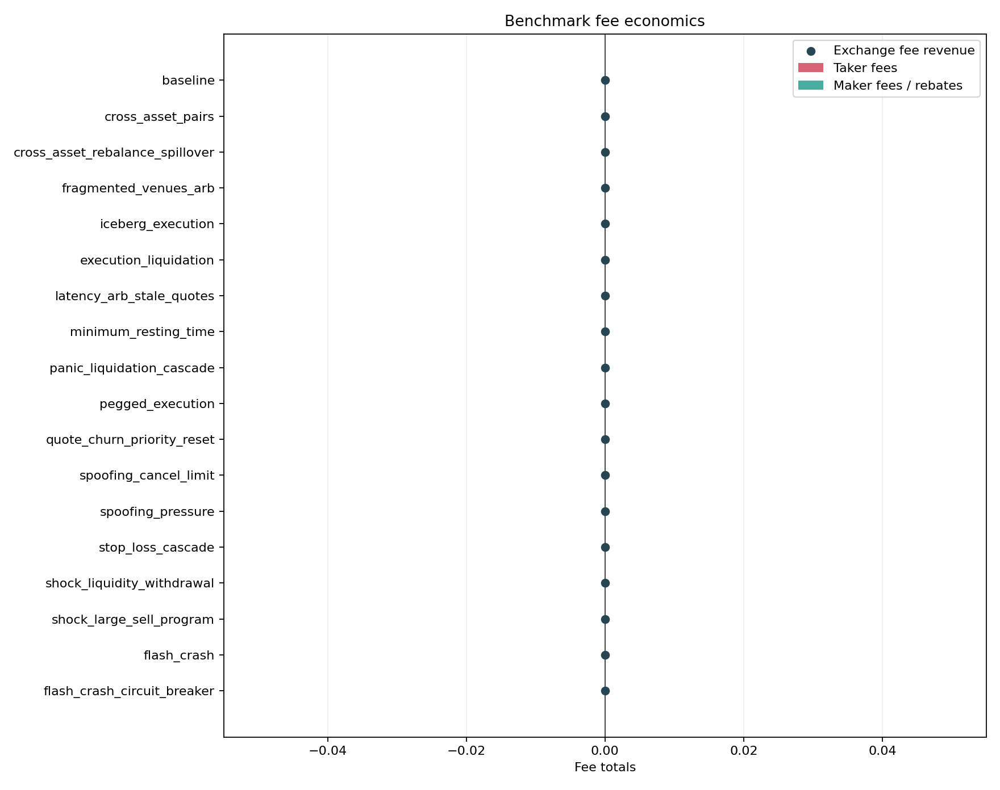
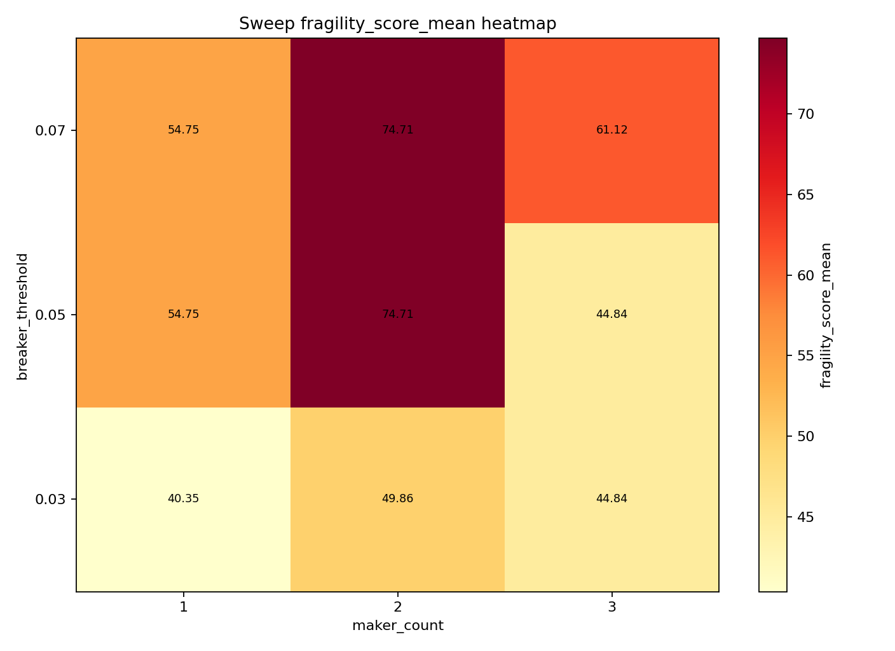
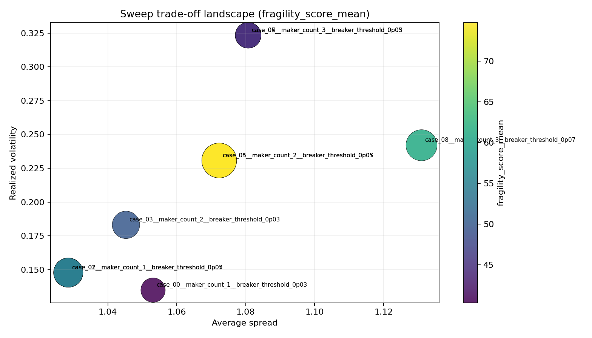
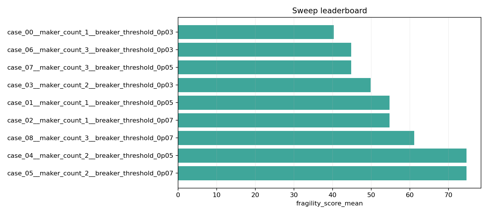

MERCURY Research Report
Benchmark Highlights
- Most fragile scenario:
flash_crashwith fragility54.7493and crash count45.0000. - Most stable scenario:
minimum_resting_timewith fragility0.6685. - Tightest spread:
minimum_resting_timeat average spread0.7186. - Highest fill rate:
spoofing_pressureat0.8000. - Largest cross-asset dislocation:
cross_asset_rebalance_spilloverwith mean absolute pair dislocation0.8201. - Strongest rebalancer outcome:
cross_asset_rebalance_spilloverwith rebalancer net PnL9549.0000.
Fragility Table
| scenario | fragility_score_mean | flash_crash_count_mean | average_spread_mean | realized_volatility_mean |
|---|---|---|---|---|
| flash_crash | 54.7493 | 45.0000 | 1.0285 | 0.1478 |
| spoofing_cancel_limit | 32.7424 | 24.0000 | 1.4503 | 0.3946 |
| spoofing_pressure | 25.3327 | 17.0000 | 1.3331 | 0.4046 |
| panic_liquidation_cascade | 23.4669 | 14.0000 | 1.0871 | 0.2558 |
| flash_crash_circuit_breaker | 21.0714 | 9.0000 | 1.0073 | 0.1199 |
Cross-Asset Scenarios
| scenario | mean_absolute_pair_dislocation_mean | pair_spread_std_mean | return_correlation_mean | cojump_frequency_mean | tail_alignment_mean | crossed_market_frequency_mean | mean_crossed_market_width_mean | venue_arb_net_pnl_mean | rebalancer_net_pnl_mean |
|---|---|---|---|---|---|---|---|---|---|
| cross_asset_pairs | 0.7940 | 2.1343 | -0.0045 | 0.0000 | 0.0000 | 0.4938 | 35.5710 | 0.0000 | 0.0000 |
| cross_asset_rebalance_spillover | 0.8201 | 1.7233 | -0.0223 | 0.0000 | 0.0000 | 0.8345 | 35.6849 | 0.0000 | 9549.0000 |
| fragmented_venues_arb | 0.5503 | 0.9809 | -0.0067 | 0.0000 | 0.0000 | 0.0966 | 0.9134 | -10.5000 | 0.0000 |
Benchmark Figures



Sweep Highlights
- Sweep name:
flash_crash_resilience_grid. - Objective metric:
fragility_score_mean. - Best case:
case_00__maker_count_1__breaker_threshold_0p03at40.3512. - Worst case:
case_05__maker_count_2__breaker_threshold_0p07at74.7103.
| case_id | fragility_score_mean | param_maker_count | param_breaker_threshold |
|---|---|---|---|
| case_00__maker_count_1__breaker_threshold_0p03 | 40.3512 | 1 | 0.0300 |
| case_06__maker_count_3__breaker_threshold_0p03 | 44.8355 | 3 | 0.0300 |
| case_07__maker_count_3__breaker_threshold_0p05 | 44.8355 | 3 | 0.0500 |
| case_03__maker_count_2__breaker_threshold_0p03 | 49.8584 | 2 | 0.0300 |
| case_01__maker_count_1__breaker_threshold_0p05 | 54.7493 | 1 | 0.0500 |
Sweep Figures



Reproducibility
- Run
python -m mercury.cli.app benchmark --output-dir ...to regenerate benchmark artifacts. - Run
python -m mercury.cli.app plot-benchmark --summary ... --output-dir ...to regenerate benchmark figures. - Run
python -m mercury.cli.app report-benchmark --summary ... --output ...to regenerate this report. - Run
python -m mercury.cli.app sweep --spec ... --output-dir ...andplot-sweepto regenerate sweep artifacts.